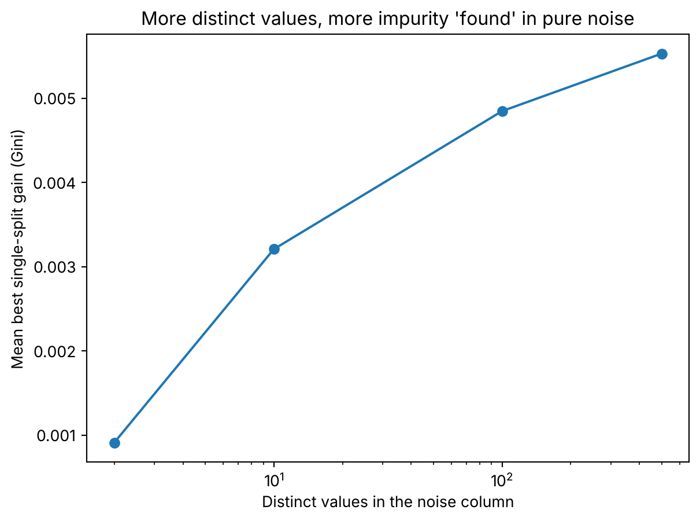

import numpy as np
import matplotlib.pyplot as plt
from sklearn.ensemble import RandomForestClassifier
from sklearn.inspection import permutation_importance
from sklearn.tree import DecisionTreeClassifier
np.random.seed(42) # all randomness below also uses explicit seedsA random forest says the noise column is your best predictor
predictive models
simulation
python
The default feature importance of a random forest ranks a column of pure noise far above a flag that really predicts. Permutation importance on held-out data puts them back in order.
You train a random forest and print feature_importances_. The top column is pure noise.
The flag that actually predicts the outcome comes second, a long way behind.
You might shrug and drop the flag. It looks like the weaker column, after all. It isn’t.
Two columns, one of them useless
I build a table with 500 rows and a binary response. One column is a flag that agrees with the response 70% of the time. The other is a standard normal draw, generated without looking at the response.
def make_data(n, rng):
y = rng.integers(0, 2, n)
flip = rng.random(n) < 0.3 # binary column disagrees with y 30% of the time
binary = np.where(flip, 1 - y, y)
noise = rng.normal(size=n) # independent of y
return np.column_stack([binary, noise]), y
X, y = make_data(500, np.random.default_rng(0))
print("accuracy of the binary column:", (X[:, 0] == y).mean())
print("corr(noise, y):", round(np.corrcoef(X[:, 1], y)[0, 1], 3))accuracy of the binary column: 0.716
corr(noise, y): -0.028The flag gets 71.6% of the rows right in this sample. The noise has a correlation of \(-0.028\) with the response, which is nothing.
If you had to bet on one column, you wouldn’t bet on the second. Now ask the forest.
rf = RandomForestClassifier(n_estimators=100, random_state=0).fit(X, y)
print("impurity importance [binary, noise]:", rf.feature_importances_.round(3))impurity importance [binary, noise]: [0.184 0.816]The noise gets 82% of the importance. The flag gets 18%.
One forest could be bad luck, so I repeat it.
200 forests, 200 times the same answer
For each seed I draw a fresh training set and a fresh validation set, 500 rows each. I fit a forest and record two things. One is the impurity importance, what feature_importances_ gives you. The other is the permutation importance on the validation rows. It shuffles one column at a time and measures how much accuracy you lose.
n_sims = 200
imp_gini, imp_perm = [], []
for seed in range(n_sims):
rng = np.random.default_rng(seed)
X_tr, y_tr = make_data(500, rng)
X_val, y_val = make_data(500, rng)
rf = RandomForestClassifier(n_estimators=100, random_state=seed).fit(X_tr, y_tr)
imp_gini.append(rf.feature_importances_)
pi = permutation_importance(rf, X_val, y_val, n_repeats=5, random_state=seed)
imp_perm.append(pi.importances_mean)
imp_gini, imp_perm = np.array(imp_gini), np.array(imp_perm)print("impurity: noise > binary in", (imp_gini[:, 1] > imp_gini[:, 0]).sum(), "of", n_sims)
print("impurity mean [binary, noise]:", imp_gini.mean(axis=0).round(3))
print("permutation: noise > binary in", (imp_perm[:, 1] > imp_perm[:, 0]).sum(), "of", n_sims)
print("permutation mean [binary, noise]:", imp_perm.mean(axis=0).round(3))impurity: noise > binary in 200 of 200
impurity mean [binary, noise]: [0.165 0.835]
permutation: noise > binary in 0 of 200
permutation mean [binary, noise]: [ 0.081 -0.001]I expected the noise to win often. It wins every single time: 200 forests out of 200. On average it takes 83.5% of the importance.
Permutation on held-out rows gives the opposite verdict, also every time. Shuffling the flag costs the model 8 points of accuracy. Shuffling the noise costs nothing, and the average even goes slightly below zero.
Same forests, opposite rankings. One measure looks at the rows the forest trained on. The other looks at rows it has never seen.
Where the noise gets its advantage
Strobl and colleagues described this in 2007. The importance scores of a random forest aren’t reliable when the predictors differ in scale or in number of categories.1 These two columns differ in exactly that: one has two values, the other has 500.
Think about what a tree does. At each node it looks for the cut that cleans up the classes the most. A binary column offers one cut. A continuous column offers one between each pair of neighbouring values.
X, y = make_data(500, np.random.default_rng(0))
print("candidate cuts, binary:", len(np.unique(X[:, 0])) - 1)
print("candidate cuts, noise:", len(np.unique(X[:, 1])) - 1)
def stump_gain(x, y):
t = DecisionTreeClassifier(max_depth=1, random_state=0).fit(x.reshape(-1, 1), y).tree_
w = t.weighted_n_node_samples
return t.impurity[0] - (w[1] * t.impurity[1] + w[2] * t.impurity[2]) / w[0]
print("best single-split gain, binary column:", round(stump_gain(X[:, 0], y), 4))candidate cuts, binary: 1
candidate cuts, noise: 499
best single-split gain, binary column: 0.0922One cut against 499. The best cut of the flag reduces the Gini impurity by 0.092.
Now take columns of noise with more and more distinct values, and look at the best single cut each one finds against a response it knows nothing about.
levels = [2, 10, 100, 500]
mean_gain = []
for k in levels:
gains = []
for s in range(200):
rng = np.random.default_rng(1000 + s)
y_s = rng.integers(0, 2, 500)
z = rng.normal(size=500)
edges = np.quantile(z, np.linspace(0, 1, k + 1)[1:-1])
gains.append(stump_gain(np.digitize(z, edges).astype(float), y_s))
mean_gain.append(np.mean(gains))
print(f"{k:>4} levels: mean best gain of a pure-noise column = {mean_gain[-1]:.4f}") 2 levels: mean best gain of a pure-noise column = 0.0009
10 levels: mean best gain of a pure-noise column = 0.0032
100 levels: mean best gain of a pure-noise column = 0.0048
500 levels: mean best gain of a pure-noise column = 0.0055fig, ax = plt.subplots()
ax.plot(levels, mean_gain, marker="o")
ax.set_xscale("log")
ax.set_xlabel("Distinct values in the noise column")
ax.set_ylabel("Mean best single-split gain (Gini)")
ax.set_title("More distinct values, more impurity 'found' in pure noise")
plt.show()
Nothing in these columns relates to the response, and yet the gain climbs from 0.0009 with two values to 0.0055 with 500.
The more distinct values a column has, the more impurity it finds in nothing.
But 0.0055 is small
Look at the two numbers again. The best cut of the noise gains 0.0055. The best cut of the flag gains 0.092, about 17 times more. A single cut doesn’t explain a 200-to-0 win.
So the rest comes from somewhere else. Two things in how the forest works.
First, with two columns, scikit-learn’s default looks at only one of them at each node, picked at random. Half the time the flag isn’t even considered.
Second, the trees grow until their leaves are pure. After the first cut on the flag, the flag is constant inside each branch. It can’t be used there again. The tree keeps going with the only column that still offers cuts.
In this forest, 98.3% of all the cuts use the noise column. Each one of them gains a sliver of impurity by memorising a few training rows. The impurity importance adds up all those slivers.
I measured the share of cuts. I didn’t check what happens when you stop the trees earlier. So the memorising is the explanation that fits these numbers, and I haven’t isolated it.
Permutation importance has no such problem, because it never looks at the training rows. It asks what happens to the accuracy on new rows if the column stops carrying information. For noise, the answer is nothing.
Why this matters to you
Think of the last time you looked at feature_importances_ to decide which columns to drop. A postcode, a customer ID, an amount with cents. Fed in as a single numeric column, those have hundreds of distinct values.
They are also the ones the default importance flatters. A column with two or three categories that predicts your target can lose to them.
If you need a ranking of columns, compute the permutation importance on rows the forest hasn’t seen. It costs a few lines and it didn’t get fooled once in 200 tries. If you only have the impurity ranking, read it as “how much the forest used this column”, which isn’t the same as “how much the column knows”.
Footnotes
Strobl, C., Boulesteix, A.-L., Zeileis, A. and Hothorn, T. (2007), “Bias in random forest variable importance measures: illustrations, sources and a solution”, BMC Bioinformatics 8, 25.↩︎